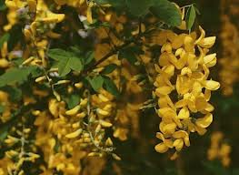

Cytise ou Faux ébénier ou Pluie d'or

Cytise ou Faux ébénier ou Cytise aubour ou Pluie d'or (Laburnum anagyroides ou Cytisus laburnum de la famille des Fabacées)
Attention : hautement toxique par ingestion pour le Korat !
Partie toxique pour les chats en général et le Korat en particulier :
Toute la plante même les parties sèches.
Symptômes du processus pathologique :
Coliques, basse pression sanguine, transpiration, crampes, problèmes de coordination le coma voire la mort par asphyxie peuvent survenir dans les 4 heures.
Origine de la toxicité (principe actif) :
Cytisine, anagyrine (action voisine de la nicotine), phytohémagglutinines.